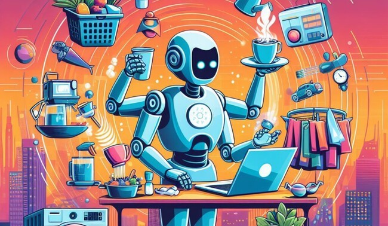

Futuros posibles

Cuando todo sea inteligencia artificial, el gato seguirá siendo lo único impredecible.
Nunca lo domesticamos del todo. Quizá el futuro solo haga evidente quién estaba realmente a cargo...
volver a inicio